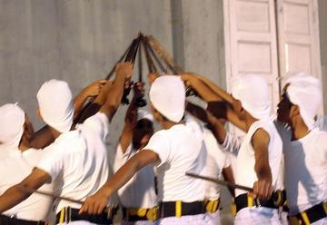
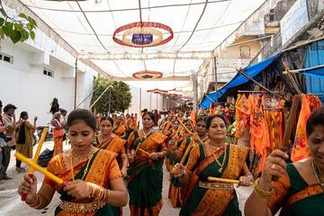
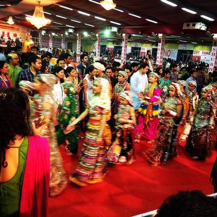

Home / Living Traditions / South Asia
Playable heritage gameDhoklan jo Nach
Also known as ڏونڪن جو ناچ · Donkan jo Nach · Dokli Dance
A men's stick dance from the Thar desert of Sindh, performed at weddings and celebrations, with dancers clashing short sticks to a drum rhythm.
How to play
- Four hands rise from the tent floor, each holding a thick rope-wrapped stick. Four places are lit: the left pair, the middle pair, the right pair, and all four together.
- Strike the place a closing ring marks, on the beat, and the sticks cross and clack together.
- Keep a steady count: the clash runs along the row.
Rules at a glance
- A stroke on the beat is perfect, a near one is good, and an extra stroke costs points.
- Each pattern is played twice.
- The round ends when the last stroke has been judged; the score is the share of the best possible.
About the tradition
Each dancer carries a stick, and pairs knock the sticks together to a ringing beat while circling to the rhythm of a dhol drum. The dance is open to men of all ages.
Origins
A living tradition passed from person to person; it is not tied to a single dated origin. It belongs to the cultural world of South Asia.
Credits
- Tradition: dhoklan jo nach of Thar, Sindh; patterns written for this game
- Text: CC BY-SA 4.0, World Heritage Games.
Sources

Get the app
Dhoklan jo Nach is coming to the App Store and Google Play. One app, many traditions, no account needed.
Coming to theApp StoreComing toGoogle Play
More games to play





More from Pakistan

Ajrak block printing
Pakistan · Crafts and making


Kathak tatkar footwork rhythm
India +1 · Other traditionsPlay preview · in the Folk Dance of the World app
Kushti / Pehlwani mud wrestling
India +1 · Wrestling and martial sportsPlay preview · in the Sports & Skill of the World app
Lippan kaam mud-and-mirror relief
India +1 · Crafts and makingPlay preview · in the Paper & Paint of the World app